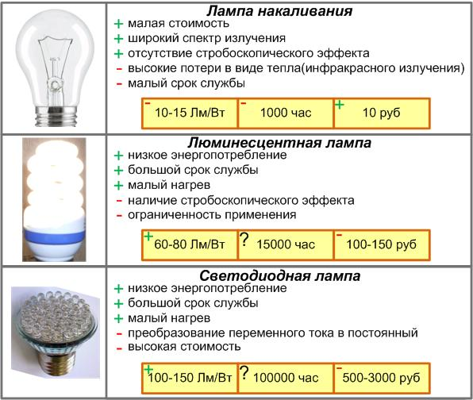

Какую лампу выбрать

| Какую лампу выбрать? Сравниваем светодиодную, люминесцентную (энергосберегающую) и лампу накаливания. На сегодняшний день рынок светотехнической продукции ошеломляет своим ассортиментом и размерами. В нашем случае мы рассмотрим три вида ламп (накаливания, люминесцентные и светодиодные), акцентируя внимание на их энергоэффективности и возможности энергосбережения.  Лампа накаливания Лампы накаливания всем нам известны, самый распространенный их вид имеет цоколь Е27. Они широко применимы и пока еще занимают ведущие позиции на рынке. До 2016 года, по решению правительства РФ, массовое производство ламп накаливания будет ступенчато прекращено. Не смотря на этот факт, хочется отметить некоторые недостатки и достоинства ламп накаливания. Плюсы. + лампы накаливания, на сегодняшний день, являются самыми дешевыми, их средняя цена 10 руб.; + лампы накаливания имеют широкий спектр излучения, что близко к естественным источникам света (солнце, огонь); + возможность эксплуатации при повышенной, внешней температуре; + серьезным преимуществом лампы накаливания является, непрерывный световой поток, препятствующий возникновению стробоскопического эффекта (стробоскопический эффект - видимость неподвижности вращающейся детали, при совпадении частоты вращения с частотой мерцания света). Минусы. - низкая световая отдача 10-15 Лм/Вт (люмен с 1 Вт энергии), вызванная тем, что основная энергия тратится на невидимое человеческому глазу инфракрасное излучение(тепловое); - малый срок службы лампы накаливания, в основном вызван низким качеством электроэнергии или неудовлетворительным состоянием электропроводки (на практике встречаются случаи исправной работы ламп накаливания в течение нескольких лет); - в соответствии с правилами пожарной безопасности, высокий нагрев лампы не позволял использовать её открыто (без плафона). Как вывод можно отметить, что лампа накаливания, в связи с низкой энергоэффективностью, более не может массово применяться и после запрета ее производства, останется как специализированный источник света, необходимый в некоторых областях жизнедеятельности. Люминесцентная лампа (энергосберегающая)Модельный ряд люминесцентных ламп представлен широко, но нас по большей части интересуют современные, с цоколем Е27. Их принцип действия, как и других люминесцентных ламп, основан на способности люминофора (белого покрытия, на внутренней части стеклянного цилиндра) преобразовывать ультрафиолетовое излучение паров ртути (излучающей в результате электрического разряда) в видимый свет. Для получения электрического разряда люминесцентным лампам старого поколения требовалась, внушительных размеров, пускорегулирующая аппаратура (ПРА). В современных лампах эту роль выполняет электронная ПРА. В общественности они получили название «Энергосберегающие», люминесцентные лампы со светящимися элементами, в виде всевозможных спиралей и дуг. Рассмотрим подробнее их плюсы и минусы. Плюсы. + энергоэффекивность главное преимущество люминесцентных ламп. Световая отдача у них в 5 и более раз больше чем у ламп накаливания и составляет 60-80 Лм/Вт; + малый нагрев, не более 80 градусов Цельсия. Позволяет использовать их без применения защитных плафонов, а также избавляет от риска получения ожогов; + срок службы люминесцентных (энергосберегающих) ламп составляет по разным оценкам 15000 часов. Хотя именно сомнения в сроке службы, резко приостановили их широкое распространение. И вызвано это наводнившими рынок подделками, собранными из низкокачественных компонентов, которые действительно, редко когда преодолевают месячный рубеж стабильной работы. Минусы. - стоимость люминесцентной лампы колеблется в районе 100-150 рублей. В принципе цена не высокая и быстро окупаемая (за счет экономии электроэнергии), но факт наличия огромного количества фальшивых ламп, а также явно завышенная наценка перекупщиков не позволяют отнести цену к положительным моментам. Можно дешевле; - ограниченность применения. Люминесцентные лампы крайне не рекомендуется применять: во влажных помещениях, так как от влажности окисляется печатная плата; в пыльных из-за забивания вентиляционных отверстий; в помещениях с высокой температурой, вызывающей перегрев конденсаторов, транзисторов и т.д.; а также при низкой температуре, люминесцентная лампа не выходит на полную светоотдачу (не разгорается); - наличие стробоскопического эффекта позволяет применять люминесцентную лампу только в качестве общего освещения, в тех местах, где имеются вращающиеся детали, с обязательной установкой местного освещения другого вида; - негативная сторона люминесцентных ламп, это наличие в них паров ртути (незначительное количество). Но именно этот факт, не неся в себе особой угрозы, все же оказывает негативное психологическое воздействие на сознание потребителей. К тому существуют проблемы с их утилизацией. Подведем итог. Энергоэффективкость люминесцентных (энергосберегающих) ламп позволяет существенно снизить расходы на освещение, а также повысить пожарную безопасность. Наилучшими условиями эксплуатации ламп являются: низкая влажность, комнатная температура и отсутствие в воздухе пыли. Кстати! По статистики около 30 % люминесцентных ламп подвергаются ремонту, путем частичной замены пускорегулирующих элементов. Светодиодная лампаСветодиод – полупроводниковый элемент, пропускающий электрический ток в одном направлении, излучая при этом заданный диапазон световых волн, видимый человеческому глазу. Светодиодная лампа с цоколем Е27, состоит из выпрямительного блока и разного количества светодиодов (в зависимости от модели). И на сегодняшний день имеет наиболее высокую энергоэффективность. К кому же светодиодные технологии преподносятся, как технологии будущего. Попробуем оценить появившуюся новинку. Плюсы. + высокая энергоэффективность, светоотдача на уровне 100-150 Лм/Вт (специалисты прогнозируют в ближайшее время удвоение светоотдачи); + высокий срок службы, в районе 100000 часов. Хотя непонятно откуда такая цифра, даже если светодиодная лампа будет работать, днем и ночью, круглый год, то минимум понадобится 11 лет для проверки. А если учесть, что в бытовых условиях требуется всего несколько часов работы, то одной светодиодной лампы хватит на всю жизнь; + малая температура нагрева; + возможность использования при низких температурах окружающей среды, однако эксплуатировать светодиодную лампу при повышенной влажности не рекомендуется; + несомненным преимуществом является механическая прочность (отсутствуют легко бьющиеся детали), а также виброустойчивость; + светодиодные лампы выпускаются в двух исполнениях - рассеивающие свет и как точечные источники. Необходимо также отметить, широкий цветовой ряд. Минусы. - нижняя планка стоимости светодиодных ламп составляет 500 рублей и является главным препятствием на пути их продвижения; - невозможность использования в условиях высоких температур. Вывод для светодиодных ламп делать еще рано, но уже сейчас можно отметить, что они обладают несомненными преимуществами и уступают только по цене. Наилучший вариант использования круглосуточный, только в этом режиме можно оценить светодиодные лампы по достоинству. Какая лампа лучше?Мы постарались подробно описать три вида наиболее распространенных ламп. Но ответить на вопрос «Какая лампа лучше?» точно, нельзя. Все они обладают своими преимуществами и недостатками. Несомненно, по показателям энергоэффективности лидирует светодиодная лампа. Со стороны целевого использования они необходимы все. Кстати! Особое внимание следует уделить качеству электроэнергии. Если у Вас часто перегорают лампы накаливания, не спешите приобретать дорогие светодиодные лампы. Сначала проверьте свою электрическую сеть, а уж потом делайте дорогостоящие покупки. Так как даже светодиодные лампы редко оснащаются внешними предохранителями и по неопытности своих владельцев в первый же день могут оказаться в мусорном ведре. Запомните, светодиодные лампы ремонтируют, надо только найти где. |